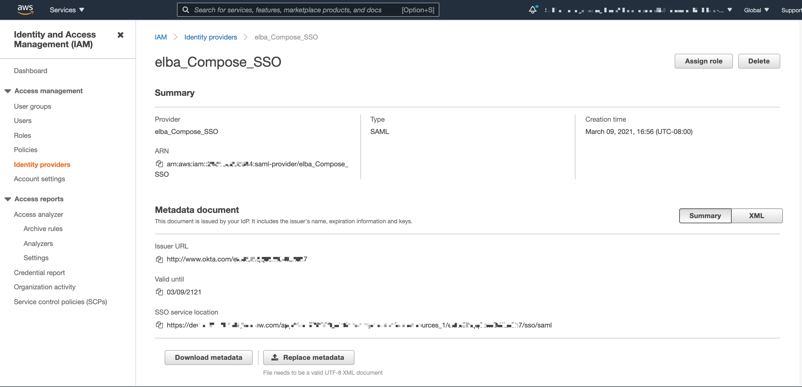
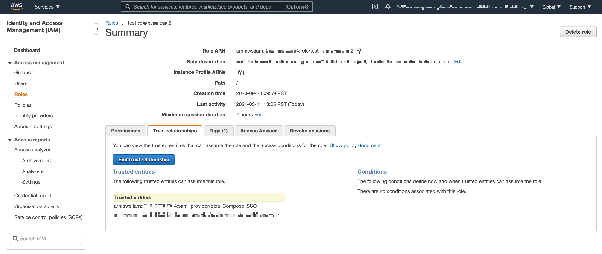

Compose SSO for Amazon Data Sources: Create Authentication Application¶
Applies from release 2021.1
Use the steps in this section to create an authentication application for Alation in the IdP when configuring Compose SSO for Amazon data sources.
Note
This configuration requires that you switch from the IdP to AWS IAM and back.
First, you will need to create an authentication application in the IdP and download its metadata file.
After that, switch to AWS IAM and configure the required entities on the AWS side. This step will give you additional information for your authentication app.
Next, return to the IdP and update the application by specifying the required SAML attributes.
Prerequisites¶
AWS¶
AWS STS API should be enabled for your AWS region. The AssumeRoleWithSAML endpoint of the AWS STS API is used by AuthService to request STS tokens.
Identity Provider¶
Alation supports Okta, AD FS, PingIdentity, and other identity providers. Alation expects that the IdP meets the following requirements:
Is SAML 2.0-compliant
Supports HTTP-Redirect Binding SAML requests
Can access AWS IAM roles:
IdP provides a way for the admin to configure IAM Roles for federated AWS users
The assertion response can be configured to include SAML attributes
RoleandRoleSessionName. The ARNs of the role and of the IAM identity provider will be used by AuthService to request an STS token using theAssumeRoleWithSAMLendpoint of the AWS STS API. See Configuring SAML assertions for the authentication response in AWS documentation for more details.Each Alation user who needs to access AWS resources from Alation exists in the IdP user directory.
Step 1. Create an Authentication Application for Alation in the IdP¶
The minimal configuration of the authentication application in the IdP requires the ACS endpoint and AWS-specific SAML attributes.
ACS Endpoint¶
Use the following format:
<base_url>/auth/callback/?method=aws_iam&config_name=<config_name>
Where:
<base_url> - Base URL of your Alation server
<method_name> -
aws_iam<config_name> - A string value. This value will be required later when configuring the AWS IAM plug-in of the AuthService on the Alation server. The <config_name> can be any value, for example:
sso_for_alation_athena. It is important to save this value and have it at the ready later in the configuration process.
Example¶
http://catalog.alation.com/auth/callback/?method=aws_iam&config_name=sso_for_alation_athena
SAML Attributes¶
At a minimum, the SAML assertion must contain the following SAML attributes:
https://aws.amazon.com/SAML/Attributes/Role
https://aws.amazon.com/SAML/Attributes/RoleSessionName
At this stage, create the authentication application without specifying the SAML attributes and download its metadata file. The role and principal ARNs can be obtained from the role and identity provider objects in AWS after they are configured in AWS.
Note
For detailed information about these attributes, refer to AWS documentation:
The next step is performed in AWS.
Step 2: Create an Identity Provider in AWS and Configure Trust Relationships for AWS Roles¶
In AWS IAM, create an identity provider object with
Provider Type = SAMLand in the settings, upload the metadata file of the authentication app you created for Alation in your IdP.If the required AWS roles already exist, for this identity provider, click Assign Role and select the roles required for users to connect from Alation. If not, create the required roles.
Edit the properties of the roles by adding this identity provider as the Trusted Entity to Trust relationships of the role.
Note
Make sure that the identity provider is added as the Trusted Entity in the Trust Relationship of every role that users will need to connect from Alation.
Save the ARNs for the roles and the ARN of the identity provider and have them at the ready.
Return to the IdP to configure SAML attributes.
Step 3. Configure SAML Attributes in the Authentication Application¶
In the IdP, edit the configuration of the authentication application you created for Alation and add the required SAML attributes. For each value of the attribute https://aws.amazon.com/SAML/Attributes/Role, specify the ARNs of the AWS IAM role and Identity Provider separated by a comma.
To specify multiple roles, use the syntax accepted by your IdP.
SAML Attribute |
Format |
|---|---|
https://aws.amazon.com/SAML/Attributes/Role |
<RoleARN, PrinicipalARN> |
https://aws.amazon.com/SAML/Attributes/RoleSessionName |
<Unique_Identifier> Typically, an IdP username or email |
Example of the Role attribute value¶
arn:aws:iam::26375297569752:role/analyst,arn:aws:iam::56239756293759:saml-provider/my_provider
Step 4. Assign Users¶
Assign users to the authentication application for Alation in the IdP. These should be the users who need access to the AWS resources from the catalog and Compose. Note that these users will be assigned the role specified in the attribute https://aws.amazon.com/SAML/Attributes/Role when they authenticate from Alation.
In case you configured multiple roles:
For Amazon Athena, users can specify one of their roles by adding the role ARN to the connection URI. If no role is specified in the URI, the authenticating user will be granted the first role returned in the assertion response.
For Amazon DynamoDB, selecting a role is not supported.